Sesión 09 · Jueves 17 de septiembre de 2026
Control de calidad: efecto de lote (introducción)
Bioinformática y Estadística 3 · Licenciatura en Ciencias Genómicas
ENES Juriquilla, UNAM · Semestre 2027-1
Yalbi Itzel Balderas Martínez
José Antonio Ovando Ricárdez
Laboratorio de Biología Computacional · INER

Antes de empezar
Objetivo de la sesión
Detectar la presencia de efecto de lote en datos de célula única, distinguirlo de señal biológica genuina mediante métricas cuantitativas, y conocer el panorama de métodos de corrección junto con sus supuestos, reconociendo el riesgo de eliminar la señal biológica al corregir.
Cómo está armada
Sesión teórico-práctica de 120 minutos, en siete momentos.
- Se alterna explicación y trabajo en equipo
- La práctica usa datos públicos de 10x Genomics
- Al final se analiza un experimento publicado
Una corrección que se ve perfecta
Importante
Un conjunto de datos con dos condiciones. Cada condición se procesó en su propia corrida. Se aplica un método de corrección de lote y el resultado se ve impecable: los grupos se mezclan por completo y la métrica de mezcla mejora muchísimo.
¿Es una buena noticia?
Anoten su respuesta. La retomamos al final de la sesión.
Desarrollo
El diseño del 20 de agosto
El 20 de agosto cada equipo diagnosticó un diseño experimental con un defecto deliberado y escribió qué esperaba ver en los datos.
Nota
Busquen la predicción que su equipo escribió en el formulario de ese día.
- Hoy primero aprendemos a medir el efecto de lote, con datos que sí se pueden corregir
- Al final vemos un experimento publicado que tiene ese mismo defecto, y comparamos con su predicción
Qué es un lote
Un lote es cualquier grupo de muestras que se procesó junto y que, por eso, puede tener diferencias técnicas que no son biología.
| Fuente de lote | Ejemplo | ¿Se puede evitar? |
|---|---|---|
| Donante | cada persona es su propio lote | no: es la unidad biológica |
| Corrida de secuenciación | dos equipos, dos fechas | a veces, repartiendo muestras |
| Química o versión del kit | 10x v2 contra v3 | sí, fijándola de antemano |
| Sitio de colecta | tres hospitales | no en estudios multicéntricos |
| Operador y día | quién disoció y cuándo | sí, con aleatorización |
Cinco formas de corregir
Todas reciben lo mismo —células de varios lotes— y todas intentan lo mismo: que el lote deje de separar a las células. Lo que cambia es qué suponen.
- Regresión del lote: resta el promedio de cada lote
fastMNN: empareja células parecidas entre lotes- Harmony: agrupa y mueve los grupos, varias veces
- scVI: un modelo que aprende las cuentas sabiendo el lote
- Anclas de Seurat: pares entre lotes, con peso
Regresión del lote

Supone un efecto aditivo: el lote suma lo mismo en todos los tipos celulares.
Implementación usada: removeBatchEffect() de limma, Ritchie et al. (2015)
fastMNN: vecinos mutuos más cercanos

Supone que hay células equivalentes en los dos lotes.
fastMNN: fast Mutual Nearest Neighbors. Método: Haghverdi et al. (2018)
Harmony: agrupar y mover, varias veces

Supone que cada grupo contiene células de varios lotes.
Método: Korsunsky et al. (2019)
scVI: un modelo que conoce el lote
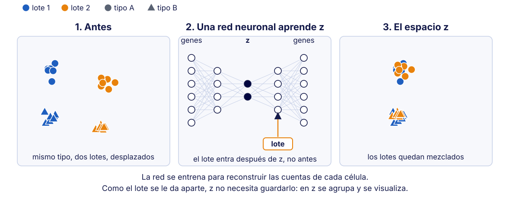
Supone que el lote es una covariable: un dato que se le da al modelo.
scVI: single-cell Variational Inference, inferencia variacional para célula única. Método: Lopez et al. (2018)
Qué es un ancla
Un ancla es un par de células de lotes distintos que el método considera «la misma célula» medida dos veces. Con sentido común: como dos personas que nunca se han visto pero tienen los mismos amigos.

Definición y puntaje de las anclas: Stuart et al. (2019)
Anclas de Seurat
![Anclas de Seurat en tres paneles, con círculos para el tipo A, cuadrados para el tipo B, azul para el lote 1 y oro para el lote 2. Primero se busca un eje común con análisis de correlación canónica: al proyectar las células sobre ese eje, cada tipo celular cae junto sin importar el lote. Luego se trazan anclas entre células parecidas de lotes distintos, con líneas más gruesas para las más confiables, y un ancla roja entre tipos distintos que se descarta. Después, cada célula se mueve según las anclas que tiene cerca y los lotes quedan encimados.](assets/images/s09-metodo-seurat.svg)
CCA (análisis de correlación canónica) busca ejes donde los dos lotes varían igual. Supone que hay correspondencias entre lotes.
Método: Stuart et al. (2019) · implementación actual, Seurat v5: Hao et al. (2024)
Los cinco, lado a lado
| Método | Qué hace | Qué supone |
|---|---|---|
| Regresión del lote | resta el promedio de cada lote | el lote suma lo mismo en todas las células |
fastMNN |
empareja vecinas mutuas entre lotes | hay células equivalentes en los lotes |
| Harmony | agrupa y mueve, varias veces | cada grupo tiene varios lotes |
| scVI | modelo que recibe el lote como dato | el lote es una covariable |
| Anclas de Seurat | pares con peso en un espacio común | hay correspondencias entre lotes |
Ritchie et al. (2015) · Haghverdi et al. (2018) · Korsunsky et al. (2019) · Lopez et al. (2018) · Stuart et al. (2019)
El supuesto que comparten todos los métodos
Importante
Todos suponen que los tipos celulares se solapan entre lotes: que cada tipo celular aparece en todos los lotes que se van a corregir.
- Ejemplo: si un lote tiene células dendríticas y el otro no, el método no tiene con qué emparejarlas
- Consecuencia posible: la corrección las acerca a otro tipo celular y la población se pierde
- Por eso, después de corregir, siempre se revisa que no haya desaparecido ningún grupo
Qué es un UMAP
UMAP (Uniform Manifold Approximation and Projection): una forma de dibujar en un plano células que se describen con miles de genes.
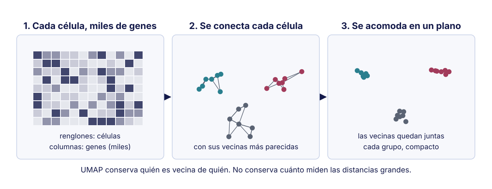
Su uso en célula única: Becht et al. (2019)
Por qué el ojo se equivoca
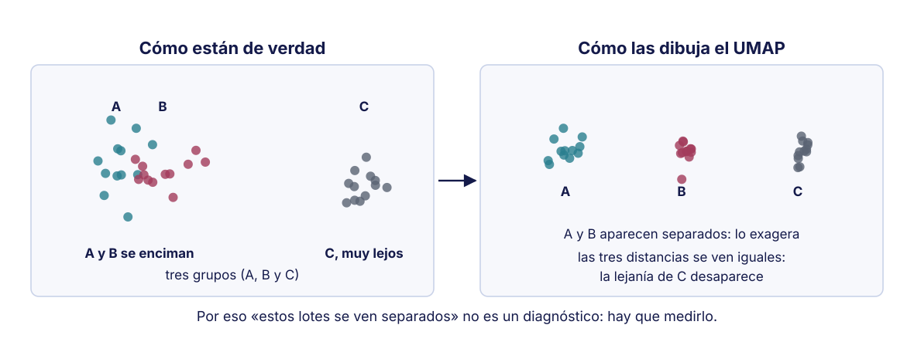
Colorear un UMAP por lote es el diagnóstico más usado y el menos fiable.
Distorsiones de estas proyecciones: Chari & Pachter (2023)
Entonces, ¿cómo se decide si la corrección funcionó?
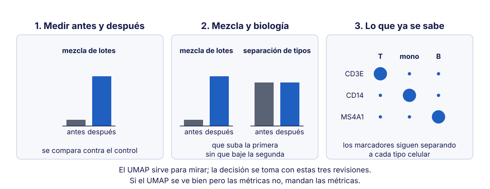
Las métricas de mezcla y de separación se explican en las diapositivas siguientes.
Lo que sí se mide
| Métrica | Qué pregunta | Escala | Qué se quiere tras corregir |
|---|---|---|---|
| Entropía de mezcla (entropy of batch mixing) | ¿las vecinas de cada célula son de varios lotes? | de 0 (un solo lote) a 1 (lotes en la misma proporción que el total) | que suba |
| Silueta por lote | ¿el lote separa a las células? | de −1 a 1; 0 = lotes encimados | que baje hacia 0 |
| Silueta por tipo celular | ¿el tipo celular separa a las células? | de −1 a 1; cerca de 1 = tipos bien separados | que no baje |
| kBET | ¿cada vecindad se parece a la mezcla del total? | fracción de vecindades rechazadas, de 0 a 1 | que sea baja |
Se calculan sin el UMAP: sobre las componentes principales, o sobre su versión corregida por cada método. En la práctica, con findKNN() (vecinas) y silhouette().
No hay un valor «normal» universal: cada método se compara contra el control sin corregir, con los mismos datos.
Entropía de mezcla
![Entropía de mezcla en dos paneles. A la izquierda, el lote 1 y el lote 2 forman dos nubes separadas, y las ocho vecinas de la célula evaluada son todas del lote 1: entropía cero, los lotes siguen separados. A la derecha, las dos nubes ocupan la misma zona y la célula evaluada tiene cuatro vecinas de cada lote: entropía uno, el máximo, los lotes están mezclados. Al pie: se cuenta de qué lote son las vecinas de cada célula y se promedia; no mira el tipo celular, así que una mezcla perfecta también puede ser una sobrecorrección.](assets/images/s09-metrica-entropia.svg)
En inglés, entropy of batch mixing; la propusieron Haghverdi et al. (2018). Los benchmarks recientes usan una métrica parecida, iLISI (índice inverso de Simpson local entre lotes): Luecken et al. (2022)
Silueta

Definición: Rousseeuw (1987) · en evaluaciones de integración: Luecken et al. (2022)
kBET
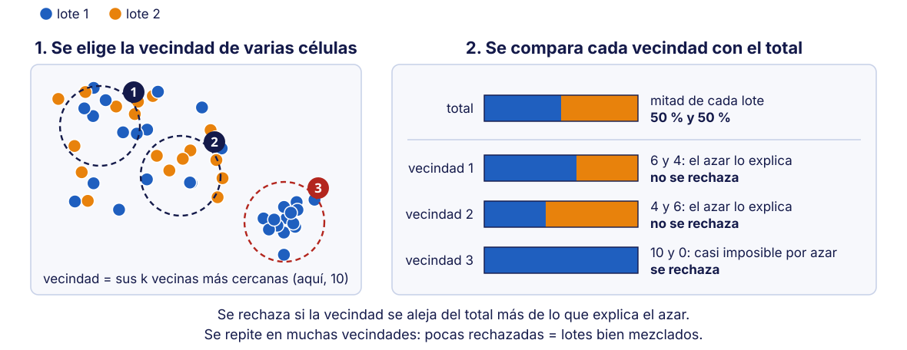
k-nearest-neighbour Batch Effect Test. Método: Büttner et al. (2019)
Una métrica sola no basta
Advertencia
Una mezcla alta no es buena señal por sí sola: mezclar del todo también es lo que hace la sobrecorrección.
- Se reportan dos familias de métricas: las de mezcla de lotes y las de conservación de la biología
- Un buen resultado sube la primera sin bajar la segunda
Marco de evaluación con las dos familias: Luecken et al. (2022)
Quién ha comparado los métodos
Hay comparaciones sistemáticas (benchmarks): se corren muchos métodos sobre los mismos conjuntos de datos y se califican con las mismas métricas.
| Tran y colaboradores, 2020 | Luecken y colaboradores, 2022 | |
|---|---|---|
| Qué compararon | 14 métodos, 5 escenarios | 16 herramientas en 68 combinaciones, 13 tareas, más de 1.2 millones de células |
| Con qué métricas | 4: kBET, LISI, ASW y ARI | 14, en dos familias |
| Qué concluyeron | Harmony, LIGER y Seurat 3; Harmony primero por ser rápido | scANVI, Scanorama, scVI y scGen, sobre todo en tareas complejas |
Tran et al. (2020) · Luecken et al. (2022). Las siglas de las métricas se explican en la diapositiva siguiente.
Qué miden los benchmarks, y por qué
| Familia | Pregunta | Métricas |
|---|---|---|
| Quitar el lote | ¿las células de distintos lotes quedaron mezcladas? | kBET, iLISI, silueta por lote, conectividad del grafo, regresión sobre componentes principales |
| Conservar la biología | ¿los tipos celulares y los procesos siguen ahí? | ARI, NMI, silueta por tipo, cLISI, etiquetas aisladas, ciclo celular, genes variables, trayectorias |
- Se miden las dos porque se contraponen: quitar más lote suele borrar más biología
- La calificación final de Luecken pesa 40 % quitar el lote y 60 % conservar la biología
LISI: índice inverso de Simpson local (iLISI, entre lotes; cLISI, entre tipos). ARI: índice de Rand ajustado. NMI: información mutua normalizada. Ambos comparan los grupos obtenidos con los tipos conocidos. Fuente: Luecken et al. (2022)
¿El mejor método depende de los datos?
Sí. No hay un ganador universal. Lo que encontraron los benchmarks:
| Situación | Métodos que rindieron mejor |
|---|---|
| Tarea sencilla: pocos lotes, tipos celulares parecidos | Harmony, anclas de Seurat |
| Tarea compleja: atlas con muchos lotes | Scanorama, scVI |
| Los tipos celulares ya están anotados | scANVI, scGen (aprovechan esas etiquetas) |
| scATAC-seq (secuenciación de cromatina accesible, en células individuales) | depende mucho de qué variables se usan |
| Lote confundido con la condición | ninguno |
Comparaciones: Luecken et al. (2022); Tran et al. (2020) · Scanorama: Hie et al. (2019) · scANVI: Xu et al. (2021) · scGen: Lotfollahi et al. (2019)
Entonces, ¿para qué sirven los benchmarks?
- Para elegir candidatos, no para decidir: la decisión se toma con las dos familias de métricas en sus propios datos
- En casi todos los métodos, elegir genes variables antes de corregir mejora el resultado
- Ninguna comparación rescata un mal diseño: si el lote es la condición, no hay método que sirva
Los datos de la práctica
Dos conjuntos públicos de 10x Genomics de células mononucleares de sangre periférica (PBMC):
| Lote | Conjunto | Química | Año |
|---|---|---|---|
pbmc3k |
PBMC 3k | v1 | 2016 |
pbmc10k |
PBMC 10k (el del módulo anterior) | v3 | 2018 |
- El lote aquí es donante + química + fecha, y no se pueden separar
- Cada célula trae una etiqueta gruesa: T, B, monocito o NK
- A uno de los lotes se le quitó una población completa. Encontrarla es parte de la práctica
Actividad en salas: un método por equipo
| Equipo | Método | Su documento |
|---|---|---|
| A | Sin corregir (el control) | equipo-a |
| B | fastMNN |
equipo-b |
| C | Harmony | equipo-c |
| D | Anclas de Seurat | equipo-d |
- Cada sala abre su documento (enlace en el chat): ya trae los resultados
- En clase no se corre código: se interpreta. El código se corre después
- Contesten las tres preguntas y peguen en el tablero su figura y su fila de métricas
Las tres preguntas de cada sala
- ¿Los lotes se mezclaron?
- ¿Los tipos celulares siguen separados entre sí?
- ¿Desapareció algún grupo que estaba en el control?
La comparación no existe hasta que se juntan las piezas del tablero: ninguna sala tiene el cuadro completo.
Cómo se contesta cada pregunta
| Pregunta | Dónde se mira | Qué indica que salió bien |
|---|---|---|
| 1. ¿Se mezclaron los lotes? | mezcla_lote y silueta_lote |
la mezcla sube y la silueta por lote baja respecto al control |
| 2. ¿Siguen separados los tipos? | silueta_tipo |
no baja respecto al control |
| 3. ¿Desapareció algún grupo? | la tabla de la sección 7 | la población exclusiva sigue en su propio grupo |
Respuestas: las cuatro filas juntas
| Método | Mezcla de lotes | Silueta por lote | Silueta por tipo | Linfocitos B en su grupo |
|---|---|---|---|---|
| A · sin corregir | 0.001 | 0.179 | 0.367 | 224 de 233 |
B · fastMNN |
0.649 | 0.007 | 0.469 | 224 de 233 |
| C · Harmony | 0.236 | 0.100 | 0.405 | 223 de 233 |
| D · anclas de Seurat | 0.827 | −0.002 | 0.449 | 228 de 233 |
- Pregunta 1: los tres métodos mezclan; Seurat es el que más, Harmony el que menos
- Pregunta 2: la silueta por tipo subió en los tres: la biología se conservó
- Pregunta 3: la población retirada eran los linfocitos B de
pbmc3k, y ningún método los borró
Respuestas: el control, sin corregir
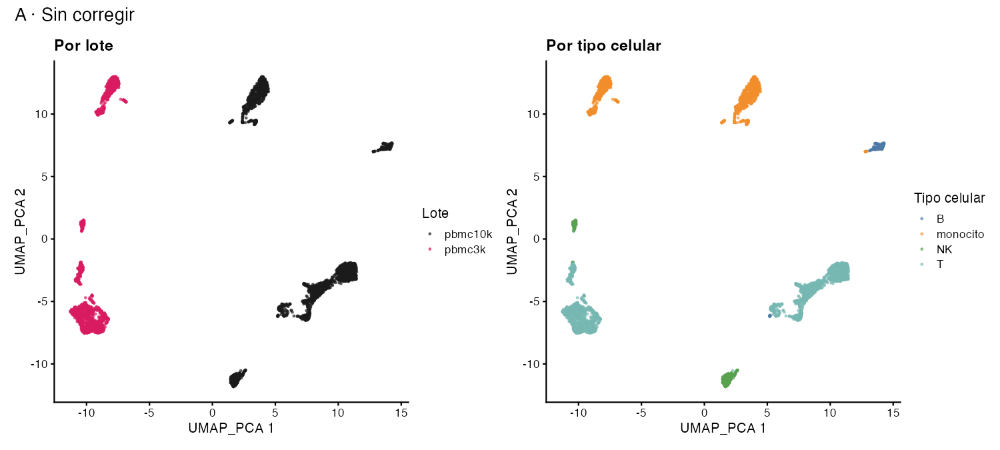
Los números de los ejes del UMAP no tienen unidades: solo importa qué células quedan juntas.
Respuestas: fastMNN
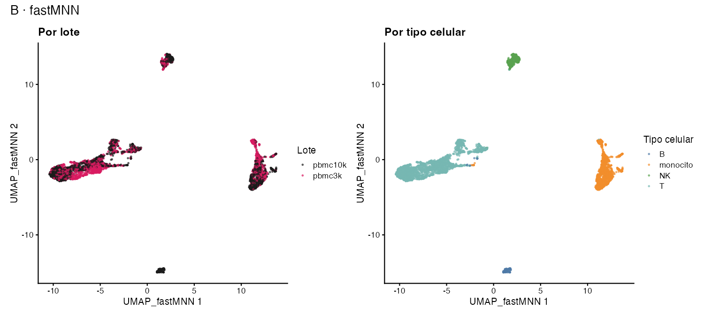
Respuestas: Harmony
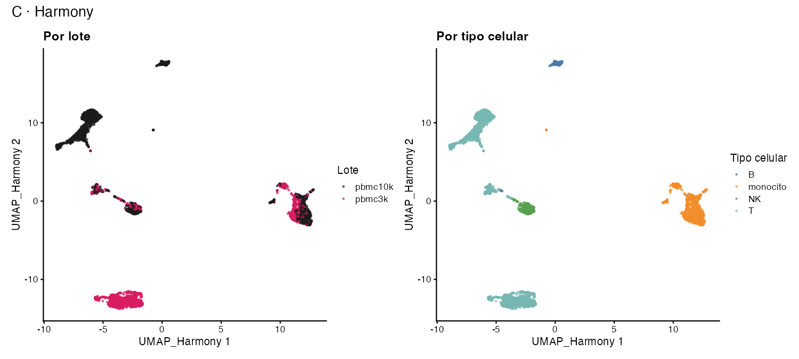
Respuestas: anclas de Seurat
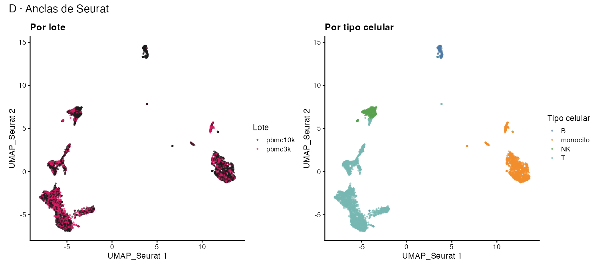
Cuando el lote es la condición
Un estudio de una enfermedad. Tres donantes sanos y tres enfermos. Cada donante se procesó en su propio día.
- El lote es el donante
- La condición también es el donante
- Están perfectamente confundidos
¿Qué método de corrección lo resuelve?
Qué método lo resuelve: la respuesta
Importante
Ninguno. Corregir por lote elimina la diferencia entre sano y enfermo, porque son la misma variable. No corregir deja el efecto de lote intacto.
- No es un problema de análisis: es un problema de diseño
- Se resuelve el día que se reparten las muestras, no después
- Es el tipo de defecto que diagnosticaron el 20 de agosto
Lote confundido en célula única: Hicks et al. (2018)
Un experimento publicado con ese defecto
GSE96583, lote 2: células de sangre de 8 donantes, mezcladas y separadas después por genotipo. Una parte se estimuló con interferón beta (IFN-β).
| Biblioteca | Condición | Donantes |
|---|---|---|
| 2.1 | solo control | los 8 |
| 2.2 | solo IFN-β | los 8 |
El mismo defecto: el donante se puede separar (está en las dos bibliotecas); la biblioteca no, porque es la condición.
Datos: Kang et al. (2018) · GEO (Gene Expression Omnibus): GSE96583, muestras GSM2560248 y GSM2560249
Sin corregir
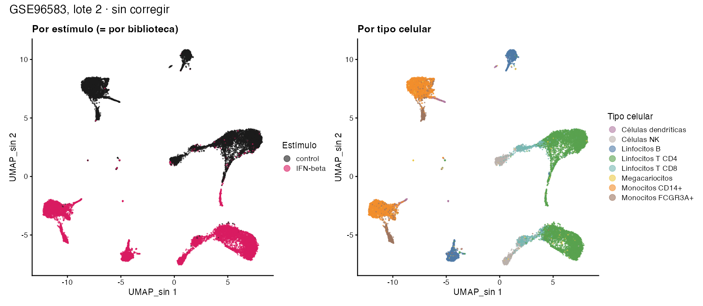
¿Qué ven en la gráfica de la izquierda, dentro de cada tipo celular?
Sin corregir: la respuesta
- Cada tipo celular aparece dos veces: una isla de control y otra de IFN-β
- El mapa parece dos copias del mismo mapa
- Con este diseño no se sabe cuánto de esa separación es el interferón y cuánto es la biblioteca
Corrigiendo por biblioteca con Harmony
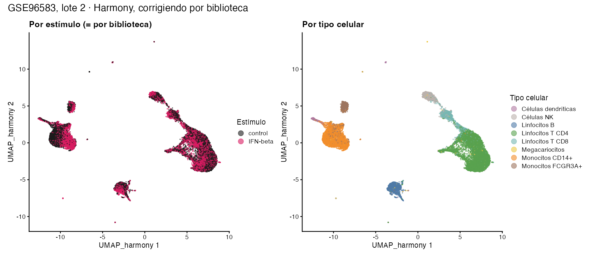
¿Qué pasó con la separación entre control e IFN-β?
Harmony: la respuesta
| Sin corregir | Harmony | Cambio | Qué buscaba la corrección | Qué significa aquí | |
|---|---|---|---|---|---|
| Mezcla por biblioteca | 0.086 | 0.771 | ↑ subió | que suba | se mezclaron las bibliotecas… que son las condiciones |
| Silueta por estímulo | 0.148 | 0.007 | ↓ bajó a casi 0 | que la silueta por lote baje | el estímulo ya no separa: se borró la respuesta al interferón |
| Silueta por tipo celular | 0.157 | 0.219 | ↑ subió | que no baje | los tipos celulares se conservaron |
Harmony: lo que dice la tabla
- Las islas de control e IFN-β se juntaron: la separación por estímulo casi desapareció
- Las tres métricas cambian en la dirección «buena»… y se borró justo lo que el experimento quería medir
- Dentro de monocitos y linfocitos T quedan zonas de un solo color: la mezcla es alta, no total
Lo que le pasa a la respuesta al interferón
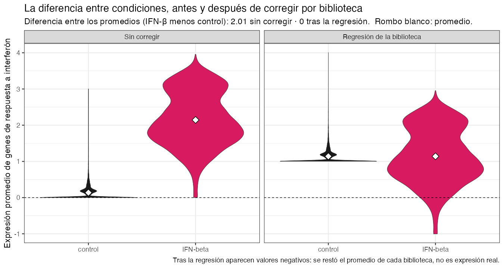
¿Por qué los dos promedios quedan exactamente a la misma altura?
Los promedios: la respuesta
- Restar el promedio de cada biblioteca es restar el promedio de cada condición: los dos promedios quedan iguales por construcción (diferencia = 0)
- Lo que desaparece es la diferencia de promedios, no toda diferencia: las células con IFN-β siguen mucho más dispersas que las control
- La regresión supone un efecto aditivo: el lote suma la misma cantidad a todas sus células en un gen. Por eso solo mueve el promedio y no cambia la dispersión
- Los valores negativos no son expresión: son el resultado de la resta
¿La corrección perfecta era buena noticia?
Importante
No. Al corregir por biblioteca se borró el efecto del interferón: la biblioteca es la condición. Las métricas de mezcla mejoraron, y eso es justamente lo que hace que la sobrecorrección parezca un éxito.
- ¿Entonces el efecto del interferón es real? Los genes que suben son los que ya se sabe que responden al interferón. Es un argumento externo al experimento, razonable pero no una prueba
- Con la tabla del diseño, esa limitación se conocía antes de secuenciar
El código de esta demostración
- Se comparte solo para consulta, para que vean cómo se hizo
- No hay actividad ni tarea con estos datos
- Archivo:
12-demo-lote-confundido-gse96583.R, en Classroom
Qué datos entran a cada paso
![Dos rutas para los mismos datos. Arriba, para corregir el lote y visualizar: de las cuentas se pasa a normalizar y elegir genes variables, de ahí a los componentes principales, luego a corregir el lote con anclas de Seurat, Harmony o fastMNN, y al final a agrupar, anotar y ver el UMAP. Abajo, para comparar condiciones: las cuentas se suman por muestra, que es el pseudobulk, y pasan a un modelo que incluye el lote como una variable más, y de ahí a los genes con valores p que sí significan lo que dicen. Al pie: normalizar no quita el lote, quita la profundidad de cada célula, y son dos pasos distintos; la excepción es scVI, que entra con cuentas crudas porque modela la profundidad por dentro.](assets/images/s09-dos-rutas-de-los-datos.svg)
- Corregir el lote: primero normalizar;
scVIes la excepción - Comparar condiciones: pseudobulk por muestra, con el lote en el modelo
- Con
SCTransform, integrar sobre el ensayoSCT, no sobreRNA
Anclas de Seurat: Stuart et al. (2019) · scVI: Lopez et al. (2018) · Por qué no se comparan condiciones sobre valores corregidos: Nygaard et al. (2016)
Errores comunes
Corregir sin revisar antes si hacía falta

Aceptar una corrección solo por el UMAP
- Qué pasa: el UMAP se ve impecable y se acepta, aunque se haya borrado biología
- Cómo darse cuenta: revisar las dos familias de métricas y que los genes marcadores sigan separando los tipos
Valores corregidos en expresión diferencial
![Dos rutas para la expresión diferencial. Arriba, en rojo, la equivocada: de las cuentas se pasa a valores corregidos, que ya no son cuentas, y de ahí a una prueba estadística que da valores p demasiado pequeños, con genes que parecen significativos y no lo son. Abajo, la correcta: de las cuentas sumadas por muestra, que es el pseudobulk, se pasa a un modelo que incluye el lote como una variable más. Al pie: la corrección usa a todas las células para mover a cada una, así que ya no son mediciones independientes y la prueba cree que tiene más evidencia de la que hay.](assets/images/s09-error-expresion-diferencial.svg)
Evaluación en célula única: Tran et al. (2020)
Por qué los valores p salen demasiado pequeños
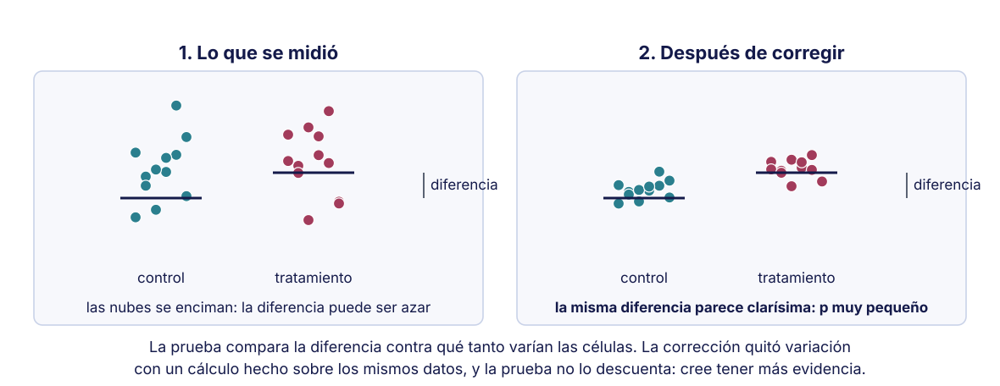
Por qué la corrección infla la confianza: Nygaard et al. (2016)
Cómo saber si se está haciendo mal
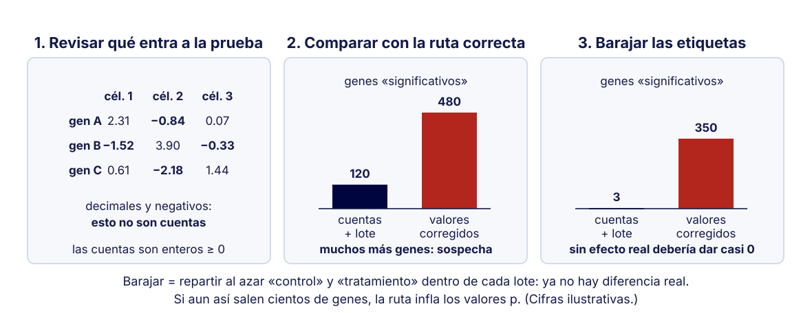
Corregir cuando el lote es la condición
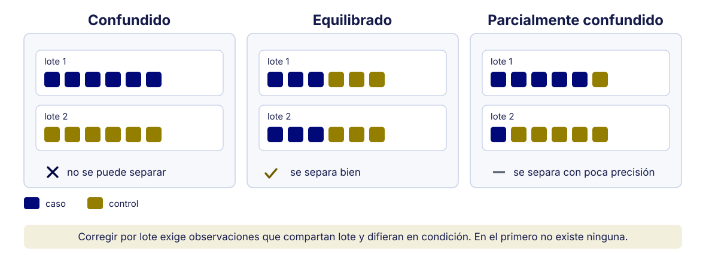
Lote igual a condición: qué hacer
- Qué pasa: corregir borra la diferencia entre condiciones, como en GSE96583
- Cómo darse cuenta: en la tabla lote contra condición, cada lote tiene una sola condición
- Qué hacer: no corregir, reportar la limitación y, en el siguiente experimento, repartir las condiciones entre lotes
Cierre
Cómo decidir, paso a paso
![Diagrama de flujo para decidir si corregir el efecto de lote. Uno: si cada lote tiene una sola condición, no se corrige y se reporta. Dos: si no hay efecto de lote, no se corrige. Tres: si hay tipos celulares en un solo lote, se vigila esa población. Cuatro: se corrige con dos o tres métodos y se revisa que la mezcla suba, la silueta por tipo no baje y los marcadores sigan intactos; si ninguno sirve, se prueban parámetros o no se corrige. Cinco: lo corregido se usa para agrupar y visualizar; la expresión diferencial se hace con cuentas y el lote en el modelo. Un recuadro aparte señala lo menos obvio: la mezcla no llega a uno si los lotes no tienen los mismos tipos, y el UMAP no decide.](assets/images/s09-flujo-decision.svg)
Qué mensaje se llevan a casa
- Antes de corregir, medir: hay conjuntos que no lo necesitan
- El UMAP no es un diagnóstico; las métricas de mezcla y de biología sí
- Todo método supone que los tipos celulares se solapan entre lotes
- El mejor método depende de los datos: los benchmarks dan candidatos, no la respuesta
- Sobrecorregir borra biología, y la métrica de mezcla no lo distingue
- Cuando el lote es la condición, ningún método lo arregla
Lo que hoy solo se abrió
- La corrección de lote se trabaja a fondo el 6 de octubre
- Hoy fue el panorama y el criterio para elegir; ahí viene el detalle
Importante
Para su proyecto (entrega del viernes 2 de octubre): si sus datos tienen lote, el reporte tiene que decir si corrigieron, con qué y por qué ese método. Un método sin justificación cuenta lo mismo que no corregir.
Para terminar la sesión
En un renglón, en el chat de Zoom:
¿Por qué ningún método de corrección resuelve un lote confundido con la condición?
Para leer: comparaciones, métricas y métodos
| Tema | Idea principal | Dónde se vio hoy |
|---|---|---|
| Benchmarks | no hay un método ganador; depende de la tarea (Luecken et al., 2022; Tran et al., 2020) | ¿El mejor método depende de los datos? |
| Métricas | medir mezcla y biología (Büttner et al., 2019; Luecken et al., 2022; Rousseeuw, 1987) | entropía, silueta, kBET |
| Métodos | cada uno tiene un supuesto (Haghverdi et al., 2018; Korsunsky et al., 2019; Lopez et al., 2018; Stuart et al., 2019) | una diapositiva por método |
Para leer: UMAP, pruebas y diseño
| Tema | Idea principal | Dónde se vio hoy |
|---|---|---|
| UMAP | sirve para ver vecinos, no distancias (Becht et al., 2019; Chari & Pachter, 2023) | Qué es un UMAP |
| Corrección y valores p | corregir infla la confianza de las pruebas (Nygaard et al., 2016) | errores comunes |
| Diseño | el lote confundido no se arregla analizando (Hicks et al., 2018) | GSE96583 (Kang et al., 2018) |
Referencias completas (1/3)
Referencias completas (2/3)
Referencias completas (3/3)
Análisis de single-cell RNA-seq · Bioinformática y Estadística 3 · LCG, ENES Juriquilla UNAM · 2027-1